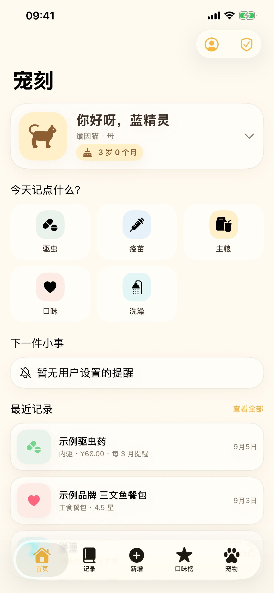

把驱虫、疫苗、主粮、口味和洗澡记录放在一处。与家人、伴侣或朋友共同维护，重要的日常不再遗漏。

记录驱虫、疫苗、主粮、口味与洗澡信息，并可添加实物照片。
使用半星评分记住爱吃与不爱吃，减少重复购买和浪费。
通过八位分享码邀请共同饲养员，同一只宠物的记录保持同步。
保存猫狗的品种、生日、性别、绝育状态与头像，随时切换。
相册和拍照独立选择；通过 Apple 登录后，记录保存到个人账号。
宠刻仅保存用户主动录入的信息，不提供诊断、医疗建议或判断。